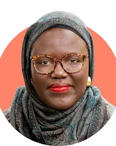
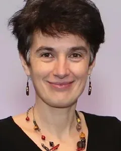

Proposed workshop at ICLR 2027
Discovery Foundation Models
From Solving Problems to Discovering Knowledge
A workshop on foundation-model systems that take part in creating and validating new knowledge, rather than only searching for solutions inside a research structure that people have already fixed.
- FormatFull day, in person
- LocationSan Francisco
- Proposed dateApril 29 or 30, 2027
- StatusProposal under review
Proposal stage
This workshop has not been accepted. It is a proposal under review for ICLR 2027. Acceptance, the day it would be held, the programme and every date below depend on that review, and submissions are not open.
The eight invited speakers are named on this page. What each of them has confirmed is tentative interest in taking part if the workshop is accepted. That is less than a confirmed talk, and it is all this page claims.
![A three-part diagram. On the left, a rising curve marks three stages of intelligence scaling: Chat, which learns existing knowledge from public data and pretraining; Agent and Coding, which learns from action outcomes through executable experience, test feedback and iterative correction; and Discovery, which creates and validates new knowledge from verifiable evidence, a discovery policy and real-world validation. In the middle, current foundation models operate on predefined tasks through knowledge, reasoning, tool use and agentic execution, with the research structure fixed by humans. On the right, discovery foundation models operate on the knowledge-production process itself through four capabilities: identifying valuable unknowns, constructing and revising research structure, testing explanations against external evidence, and improving discovery capability across tasks; here the research structure is the object of model action and revision. Along the bottom runs the recursive discovery loop: a partially understood world leads to valuable unknowns, then to a researchable problem, then to an explanation and intervention, then to validated new knowledge, which updates world understanding and starts the loop again.](assets/img/dfm-teaser-1800.webp)
What the next step after problem solving looks like
Foundation models have advanced in stages, each defined by what they learn from. They first learned from what humans wrote: large-scale pretraining turned them into broad stores of existing knowledge. They then began to learn from the outcomes of their own actions through reasoning, tool use, code execution and agentic workflows driven by verifiable feedback. In science, the same capabilities now support protein structure prediction, materials discovery and weather forecasting, and AI co-scientists, AI-scientist systems and self-driving laboratories increasingly connect model-generated hypotheses to experiments, mostly within goals and setups that people have chosen.
The ceiling is a research structure fixed by humans. Most current systems, however capable, begin from a research structure that people have already chosen, namely the problem, its representation, the objective, the tools and the evaluator, and they search for a solution inside it. The limitation is not a lack of scientific knowledge or reasoning. Most training and evaluation pipelines reward competence only after this structure has been fixed, and more competence inside the structure does not by itself repair it. A fixed representation cannot express a variable it omits, so a persistent failure may reflect a missing variable rather than a weak optimizer. A search objective cannot recover a property its evaluator ignores, so a benchmark can reward a proxy. And more samples cannot separate two mechanisms when the available observable does not distinguish them. An automated workflow can therefore pursue a misframed question more efficiently without becoming any better at noticing the misframing.
From problem solving to discovery intelligence. We refer to the missing capability, changing the research structure itself rather than only working inside it, as discovery intelligence. In a discovery episode this structure is not fixed: the episode starts from a partially understood world and must produce both externally validated progress and a record of how the problem, representation, hypotheses and evidence were revised. The gap lies in three transitions that are still left to people: framing, turning observations and uncertainty into a problem worth pursuing; modeling, constructing the variables in which competing explanations become expressible and distinguishable; and grounding and revision, choosing evidence that can change an explanation's status and attributing failures to the right cause.
A Discovery Foundation Model is a general-purpose model system that performs these transitions and becomes better at them. It acts not on a fixed task but on an explicit, revisable research state: a linked record of the current problem, representation, hypotheses, evidence and interventions, and of why each was revised. It is defined by what it can construct and revise, not by its architecture or degree of autonomy, and the unit that is evaluated and credited is the whole system, including its tools, validators and human collaborators.
- Find Framing and modeling Identify valuable unknowns, formulate researchable problems, construct and revise representations, and form testable explanations.
- Test Grounding and revision Design informative interventions and revise explanations from external evidence the system cannot rewrite after seeing the result.
- Improve Learning and recursion Become better at these operations across tasks and domains, with the checks that decide whether a change is kept left outside self-modification.
Why science. Science is where this capability can be learned and tested, because it is an environment that pushes back. Questions are underspecified, variables hidden, interventions costly and outcomes delayed; above all, evidence arrives from experiments, simulations and measurements that the model cannot rewrite after seeing the result. These properties turn problem formulation, experiment design, failure attribution and revision into observable decisions rather than qualities of a final answer, so they can be trained on directly and credited even when the outcome is negative. Science also makes evaluator incompleteness visible: benchmark leakage, simulator artifacts and non-reproducible effects can all create apparent progress without stronger knowledge.
Discovery is recursive. Validated findings update our understanding of the world and seed the next round of questions, and a discovery system can go further by revising its own skills, tools, simulators, memory and evaluators. Recursive scientific improvement carries a larger validation burden, because one update can change which problems are selected, which evidence is collected and how success is judged: a benchmark generator that silently drops hard cases, or an evaluator that starts rewarding internal agreement, can make measured performance rise while real discovery ability narrows. The near-term question is therefore not unrestricted autonomy, but whether bounded, reversible changes to a discovery system yield repeatable gains under external validation.
How can foundation-model systems move from solving the problems we give them to deciding what is worth discovering, testing explanations against evidence they cannot rewrite, and becoming better discoverers over time?
How this compares with the paradigms it builds on
| Paradigm | Problem source | Representation change | Intervention design | Problem revision | External grounding | Skill transfer |
|---|---|---|---|---|---|---|
| Foundation models for science | Given | Limited | External | Not defining | Data | Not defining |
| Scientific reasoning models | Given | Limited | Limited | Not defining | Tasks or verifiers | Not defining |
| Scientific agents and AI scientists | Often given | Optional | Often | Optional | Tools and environments | Usually task-specific |
| Search and evaluator systems | Given | Fixed | Domain dependent | Not defining | Evaluator | Not defining |
| Autonomous laboratories | Often given | Task defined | Required | Optional | Physical | Not defining |
| Discovery foundation models | Constructed | Required | Required | Required | Required | Required |
The term Discovery Foundation Model was introduced in a technical report by two of the organizers. The workshop treats it as an open research target, not as any particular system; AI co-scientists, self-driving laboratories, and equation and causal discovery all address parts of it and are in scope.
Five open problems we would like the workshop to move
-
Framing and modeling
Can a system recognize from evidence that the question, variables or evaluator it was given are inadequate, and construct a formulation whose candidate explanations differ in mechanism, not only in wording?
-
Discriminating evidence
How should a system choose experiments that can change the status of competing explanations under cost and risk, and attribute an unexpected outcome to theory, measurement, protocol or confounding before deciding what to revise?
-
Learning from dry-lab and wet-lab feedback
Dry-lab signals, such as simulations, learned predictors and tests the system writes for itself, are cheap and dense but are proxies that a policy can exploit, while wet-lab measurements provide stronger external grounding but are slow, costly and delayed. How should training combine the two, and credit information gain and evidence-grounded revision rather than final success alone?
-
Safe and verifiable recursion
Which parts of a discovery system may it modify, and how should validation, provenance and rollback scale with how far an update's effects reach?
-
Evaluating the process
Final-answer scores cannot separate discovery from retrieval, leakage or extra compute, and they give no credit to a justified negative result. How can benchmarks credit the process, and separate progress in the current investigation from improvement in future discovery ability?
What the workshop would invite papers on
Eight topics, following the order of the agenda: find, test, improve, and the evaluation and governance that hold across the loop.
- Problem discovery and formulation Identifying valuable unknowns in residuals, contradictions and failed replications; rejecting artifacts; and turning anomalies into bounded, testable problems.
- Representation and hypothesis construction Latent variables, changes of scale, and causal, symbolic or programmatic reformulation; mechanistically distinct, falsifiable explanations.
- Intervention design and evidence-grounded revision Choosing experiments, simulations and replications by their expected information, and updating whichever part of the research state is at fault.
- Grounding across digital, simulated and physical worlds Discovery in mathematics, code and machine-learning research; simulators and digital twins; and self-driving laboratories and dry-lab to wet-lab loops.
- Learning to discover Research trajectories and interactive research environments, process supervision, reinforcement learning from scientific feedback that combines dry-lab and wet-lab signals, research world models that predict outcomes, costs and risks before a physical test, curricula that move from simulation to physical experiments, and discovery skills that transfer across domains.
- Recursive discovery and self-improvement Systems that revise their own discovery skills, tools, simulators, evaluators and memory; bounded, versioned, reversible improvement validated on externally selected tasks.
- Process-centered evaluation Benchmarks that credit formulation, intervention and revision rather than final answers alone, with controls for leakage and extra compute.
- Epistemics, governance and safety Claim status and independent validation, provenance and auditability, scoped authority and human oversight, and dual-use concerns in autonomous science.
Four proposed tracks
Two of the tracks exist because of the theme: they bring problem owners from the sciences and well-attributed failures into the programme.
Not open
Submissions are not open and the tracks below are proposed, not confirmed. Nothing here is a call for papers. If the workshop is accepted, the call and the submission site would follow the timeline in the next section.
-
Up to 8 pages
Full papers
Following the ICLR 2027 template.
-
Up to 4 pages
Tiny papers
Less-than-full-conference work: an implementation and evaluation of an unpublished but simple idea, a modest but self-contained theoretical result, a follow-up experiment or re-analysis of a published paper, or a fresh perspective on an existing publication. The track is meant to broaden participation by students, early-career researchers and domain scientists, and as ICLR requires, tiny papers must be primarily human-authored.
-
Up to 2 pages
Open Discovery Problems
Scientists describe an unsolved problem together with the data and validation conditions needed to attack it.
-
Up to 4 pages
Negative Results and Failure Analyses
A well-attributed failure of an AI-driven discovery attempt, treated as a contribution.
Review process
The workshop would be non-archival, and papers already published at an archival venue, including the ICLR 2027 main conference, would not be eligible. Reviewing is double-blind on OpenReview, with at least three reviews per full paper and two per shorter submission. We expect 80 to 150 submissions and will recruit about 160 reviewers, so that no reviewer handles more than three papers even if every submission is a full paper, and each paper is assigned both machine-learning and domain-science reviewers. We expect to accept 40 to 60 papers.
Authors are encouraged, but not required, to state briefly which parts of the research structure were given and which the system constructed or revised, which evidence supports each claim, and where humans intervened.
Conflicts and the use of AI
No organizer handles a submission from their own organization. Submissions from the organizers' groups or from PhAI Labs are handled by a senior program-committee member outside these groups and are not eligible for awards.
AI systems will not serve as authors or reviewers. AI-generated submissions will not be accepted, AI-assisted writing is permitted if clearly disclosed in accordance with the ICLR 2027 policy, and reviewers may not use AI tools to write their reviews or upload submissions to external AI services.
The proposed timeline
The timeline the proposal sets out in order to meet ICLR's mandatory notification date of February 26, 2027. Every date here is proposed and depends on the workshop being accepted.
-
Early December 2026
Call for papers and website launch, with a reminder that authors need an OpenReview profile well before the deadline.
-
January 29, 2027
Workshop paper submission deadline.
-
January 30 to February 17, 2027
Reviewing.
-
February 24, 2027
Notification of acceptance, with accepted papers public on OpenReview and imported into iclr.cc.
-
March 19, 2027
Camera-ready deadline.
-
March 26, 2027
Schedule with opening and closing times on iclr.cc, and talk titles public.
-
April 14, 2027
Schedule finalized in the ICLR organizer portal.
-
April 29 or 30, 2027
Workshop, in San Francisco. The day is assigned by ICLR and is not yet fixed.
The eight invited speakers
Each of the eight people below has confirmed tentative interest in speaking if the workshop is accepted. That is what they have agreed to: not a confirmed talk, because there is not yet a confirmed workshop. Four of them would also take part in the closing panel debate.
In the order they would speak
-
Kenneth Stanley
Lila Sciences
Senior Vice President of Open-Endedness at Lila Sciences, leading work on continual, open-ended discovery and testing open-ended search algorithms with Lila's physical laboratories on problems in materials science, therapeutics and chemistry. Created the NEAT neuroevolution algorithm and novelty search, previously led the Open-Endedness team at OpenAI, and co-founded Geometric Intelligence, which became Uber AI Labs. Co-author of Why Greatness Cannot Be Planned: The Myth of the Objective.
-

Adji Bousso Dieng
Princeton University
An Assistant Professor of Computer Science at Princeton University, leading the Vertaix lab at the intersection of artificial intelligence and the natural sciences, with associated appointments including Chemical and Biological Engineering and the Princeton Materials Institute; a research scientist at Google DeepMind from 2020 to 2025. Work on Vendi scores measures diversity in machine learning and uses it to drive experimental design toward unexplored regions, including quality-weighted Vendi scores for diverse experimental design at ICML 2024, and an NSF CAREER project develops what Dieng calls investigative intelligence for scientific discovery.
-
Heng Ji
University of Illinois Urbana-Champaign
A Professor of Computer Science in the Siebel School of Computing and Data Science at the University of Illinois Urbana-Champaign, and founding director of the Amazon-Illinois Center on AI for Interactive Conversational Experiences and the Capital One-Illinois Center on AI Safety and Knowledge Systems. Named an ACL Fellow in 2025 for contributions to information extraction, multimodal and multilingual knowledge extraction, and AI for science, and a co-author of SciMON, which generates scientific ideas optimized for novelty against the literature. Honors include outstanding paper awards at ACL 2024 and NAACL 2024 and an NSF CAREER Award.
-
Zhiyuan Liu
National University of Singapore
A Postdoctoral Research Fellow at the National University of Singapore, working with Yang Zhang in the School of Computing. Research on AI for science develops multimodal generative models that connect language with small molecules, proteins, RNA and single-cell data, including MolCA, 3D molecule and text interpretation in language models, ProtT3 for protein-to-text generation, and NExT-Mol for 3D molecule generation. Also co-developed clawRxiv, a venue that accepts research papers written by AI agents.
-
Chang Ma
University of Washington
A Postdoctoral Researcher at the University of Washington, co-advised by Pang Wei Koh and Hanna Hajishirzi, with a Ph.D. in Computer Science from the University of Hong Kong in 2026. Research develops autonomous, efficient and trustworthy agents with a long-term focus on scientific discovery, including Orion, which uses computer-using agents to automate laboratory workflows, ScienceBoard, which evaluates multimodal agents in realistic scientific workflows, and BioMaze for biological pathway reasoning. Earlier work includes the PEER benchmark for protein sequence understanding and the GIMLET graph and text model for molecules.
-
Yatao Bian
National University of Singapore
An Assistant Professor of Computer Science at the National University of Singapore and a Singapore National Research Foundation Fellow in the class of 2026, with a Fellowship project on reasoning-empowered foundation models for atomic systems. Research on AI for scientific discovery spans energy- and entropy-based learning, reasoning-capable scientific foundation models, and large language models and agents for science and their safety. Holds a Ph.D. from ETH Zurich, was an Associate Fellow of the Max Planck ETH Center for Learning Systems, was named a Microsoft Research Asia StarTrack Scholar in 2026, and serves as an area chair for ICML, NeurIPS and ICLR.
-

Mihaela van der Schaar
University of Cambridge; Francis Crick Institute
The John Humphrey Plummer Professor of Machine Learning, Artificial Intelligence and Medicine at the University of Cambridge, founder and director of the Cambridge Centre for AI in Medicine, and, since 2026, Chief AI Scientist at the Francis Crick Institute. The lab studies AI agents that uncover scientific structure, including networks of research agents and human experts that jointly generate, critique and refine hypotheses. A Fellow of the Royal Society and an IEEE Fellow.
-
Jeff Clune
University of British Columbia; Vector Institute; Recursive
A Professor of Computer Science at the University of British Columbia, a Canada CIFAR AI Chair at the Vector Institute, and a co-founder of Recursive, which builds self-improving AI systems that start with AI research and then turn to scientific domains. A co-author of Towards End-to-End Automation of AI Research, in Nature in 2026, which describes The AI Scientist, and of the Darwin Gödel Machine, a self-improving coding agent. Previously held roles at DeepMind, OpenAI and Uber AI Labs.
Why these eight
Each speaker's work is a building block of the agenda, and the invited talks follow the find, test and improve order of the day. Stanley opens find with open-ended search for what is worth discovering, which his team now tests with Lila Sciences' physical laboratories; Dieng follows with Vendi scores and diversity-driven experimental design, which steer molecular and materials discovery toward unexplored regions; Ji brings SciMON, which generates scientific ideas and optimizes them for novelty against the literature; and Liu closes find with multimodal generative models that connect language with molecules and proteins, and with clawRxiv, which raises the question of how research written by AI agents should be judged.
In test, Ma builds computer-using agents that run laboratory workflows and benchmarks that check how well agents carry out real scientific work; Bian builds reasoning-capable foundation models for atomic systems and agents for science, which tie a model's reasoning to physical structure; and van der Schaar, whose lab studies networks of research agents and human experts that jointly generate, critique and refine hypotheses, speaks to how explanations are revised against evidence and how credit is divided between the model and the people around it. Clune closes the invited talks and anchors improve with The AI Scientist and the Darwin Gödel Machine.
Four of them meet again in the closing panel: Stanley, whose work on open-ended search challenges fixed objectives, on how far a system may revise its own evaluator; Dieng, who measures diversity in what models generate, and Liu, who co-developed a venue for agent-written research, on what counts as evidence of discovery ability; and van der Schaar, who studies research agents working with human experts, on how credit is divided between the model and the people around it.
A full day built around structured interaction
We propose a full-day, in-person workshop combining invited talks, contributed presentations, posters and a panel debate, to balance intellectual depth with structured interaction. The programme would feature eight invited talks, four contributed talks, three spotlights from the Negative Results and Failure Analyses track, a pitch session for the Open Discovery Problems track, two one-hour poster sessions integrated with coffee breaks, and a closing panel debate with four of the invited speakers. The invited talks follow the agenda: find in the morning, test in the early afternoon and improve in the late afternoon. In total, the poster sessions, problem pitches and panel debate give about three hours of structured interaction. An awards session concludes the day.
Speakers
The eight speakers named in the schedule below have confirmed tentative interest in taking part if the workshop is accepted. None of these talks is confirmed, and none can be until ICLR has accepted the workshop. Section 06 says who they are.
| Time | Session | Speaker |
|---|---|---|
| 8:30–8:40 | Opening remarks | |
| 8:40–9:10 | Invited talk 1, find | Kenneth Stanley |
| 9:10–9:40 | Invited talk 2, find | Adji Bousso Dieng |
| 9:40–10:40 | Coffee break and poster session I | |
| 10:40–11:10 | Invited talk 3, find | Heng Ji |
| 11:10–11:40 | Invited talk 4, find | Zhiyuan Liu |
| 11:40–12:00 | Open Discovery Problems pitches | |
| 12:00–13:00 | Lunch | |
| 13:00–13:30 | Invited talk 5, test | Chang Ma |
| 13:30–14:00 | Invited talk 6, test | Yatao Bian |
| 14:00–14:30 | Invited talk 7, test | Mihaela van der Schaar |
| 14:30–15:10 | Contributed talks, 10 minutes each | |
| 15:10–16:10 | Coffee break and poster session II | |
| 16:10–16:40 | Invited talk 8, improve | Jeff Clune |
| 16:40–17:10 | Negative results spotlights | |
| 17:10–17:50 | Panel debate | Mihaela van der Schaar, Kenneth Stanley, Adji Bousso Dieng, Zhiyuan Liu |
| 17:50–18:00 | Awards and closing remarks |
Panel debate
The workshop closes with a panel of four invited speakers, Mihaela van der Schaar, Kenneth Stanley, Adji Bousso Dieng and Zhiyuan Liu, organized around three questions on which we expect them to disagree: how far a discovery system should be allowed to revise its own evaluator, and what must stay outside its self-modification; whether many automated runs are stronger evidence of discovery ability than a few well-audited investigations; and how credit for a discovery should be divided between the model and the humans, tools and laboratories around it. The panel is moderated by one of the organizers, who also take audience questions. Questions for the panel are also collected through an online form during the day.
Awards
We will present up to three awards: Best Paper, Best Open Discovery Problem, and Best Grounded Discovery. The last goes to the submission whose claims rest most convincingly on evidence the system cannot rewrite, such as wet-lab experiments, independent replication, or hidden-test and held-out validation in digital settings, whether the outcome confirms or refutes the original hypothesis. Winners are presented in the contributed talks, spotlights or pitches.
Interaction and access
ICLR 2027 workshops are held in person. To engage those who cannot attend, invited talks and the panel will be recorded where ICLR provides recording and the speakers agree; otherwise we will post speaker-provided videos or slides on the workshop website. Accepted papers, posters and slides will be posted on OpenReview and the workshop website, and talk titles will be public before the conference. Within four weeks of the workshop we will publish the curated list of open discovery problems with their validation conditions, together with a short report on the panel debate. Authors or speakers who cannot travel, for example because of visa delays, can present through a pre-recorded video, with their poster displayed by an organizer. If an invited speaker withdraws, the slot goes to an additional contributed talk.
Expected audience
We anticipate 150 to 200 sustained in-person participants, with peak attendance of 250 to 350. This estimate is based on comparable ICLR workshops and on the more than 250 submissions received by the ICLR 2026 Lifelong Agents workshop, co-organized by members of our team. We will promote the workshop through a dedicated website, social media, OpenReview, mailing lists in machine learning and in computational biology, chemistry and materials science, and the organizers' networks. For the Open Discovery Problems track we will reach out directly to self-driving-laboratory consortia and domain-science communities, since real problem owners are what make the track useful.
Inclusion
A central part of our outreach is active engagement with affinity groups, including WiML, LatinX in AI, Black in AI, Queer in AI and {Dis}Ability in AI, as well as universities in the San Francisco Bay Area. We will host mentoring tables at lunch, open at least one contributed talk to the tiny paper track, and invite students to join the program committee as reviewers paired with senior reviewers.
Funding
The awards and the student travel grants will be funded by PhAI Labs, a non-profit research organization co-founded by two of the organizers. Because of that, submissions from PhAI Labs are not eligible for awards. ICLR provides four complimentary registrations per workshop, which we will allocate to students and early-career authors from under-resourced institutions.
The people proposing the workshop
Four organizers and three senior organizers, within the eight people ICLR 2027 allows in organizing roles. As a team, the organizers have run more than ten workshop editions at ICML, ICLR, ICCV, CVPR and COLM. The four organizers run day-to-day operations, the senior organizers shape the scope and help recruit domain-science reviewers and problem owners, and the organizers attending in person chair the sessions. They give no talks at the workshop.
Organizers
-
Zhaochen Yu
National University of Singapore; PhAI Labs
A Ph.D. student at the National University of Singapore advised by Shuicheng Yan. Research covers reasoning and agentic reinforcement learning for large language models and recursive self-improvement of agent harnesses, with representative works including Buffer of Thoughts, SuperCorrect, ReasonFlux and Recuris. Has served as a reviewer for NeurIPS, ICLR, ICML, AISTATS and AAAI.
-
Zhenfei Yin
PhAI Labs; University of Oxford; Shanghai Innovation Institute
An incoming assistant professor at the Shanghai Innovation Institute, a postdoctoral researcher at the University of Oxford working with Philip Torr, and a co-founder of PhAI Labs. Research interests include multimodal learning, AI agents, multi-agent systems, embodied agents and AI for science. Has organized Trustworthy Multimodal Foundation Models and AI Agents and Multi-modal Foundation Model meets Embodied AI at ICML 2024, Multi-Agent Systems in the Era of Foundation Models at ICML 2025, Multi-Modal Reasoning for Agentic Intelligence at ICCV 2025 and CVPR 2026, and Lifelong Agents at ICLR 2026 and COLM 2026.
-
Ling Yang
PhAI Labs; Princeton University; Peking University
An incoming assistant professor at Peking University, a postdoctoral researcher at Princeton University working with Mengdi Wang, and a co-founder of PhAI Labs. Research covers post-training of large language models and agents, reinforcement learning systems, recursive self-improvement and discovery intelligence; representative works include Buffer of Thoughts, the ReasonFlux series and RLAnything. Built the Gen-Verse open-source community, received the 2026 WAIC Yunfan Award, and serves as an area chair for ICML, ICLR and NeurIPS.
-
Cheng Qian
University of Illinois Urbana-Champaign
A Ph.D. student at the University of Illinois Urbana-Champaign advised by Heng Ji, and a Capital One ASKS Center Fellow. Research covers large-language-model agents, including tool use, reasoning, user alignment and creativity, with representative works including CREATOR, ToolRL and UserRL. Main organizer of Lifelong Agents at ICLR 2026 and COLM 2026, and an area chair for ACL Rolling Review.
Senior organizers
The senior organizers have shaped the theme and scope of the workshop, and their experience guides its vision, structure and academic direction.
-
Philip Torr
University of Oxford
A Professor at the University of Oxford, holding the Five AI and Royal Academy of Engineering Research Chair in Computer Vision and Machine Learning. Accolades include the Marr Prize, a Royal Society Wolfson Research Merit Award, and fellowships of both the Royal Academy of Engineering and the Royal Society; a Turing AI World-Leading Researcher Fellow. Has co-organized Foundation Models in the Wild at ICML 2024 and ICLR 2025, and Multi-Agent Systems in the Era of Foundation Models at ICML 2025.
-
Mengdi Wang
Princeton University
A Professor of Electrical and Computer Engineering and of the Center for Statistics and Machine Learning at Princeton University, and Co-Director of Princeton AI for Accelerated Invention. Research spans reinforcement learning, generative AI and AI for science, including agentic discovery systems such as CRISPR-GPT and LabOS. Was a Program Chair of ICLR 2023 and has co-organized workshops including MLGenX at ICLR 2025, Lifelong Agents at ICLR 2026, and AI for Science: AI Scientists at ICML 2026.
-
Shuicheng Yan
National University of Singapore
A Distinguished Professor on the Practice Track at the School of Computing, National University of Singapore, where he leads LV-Lab; previously Group Chief Scientist at Sea Group. A Fellow of the Singapore Academy of Engineering, AAAI, ACM, IEEE and IAPR. Current research interests include efficient, executive and evolving AI. Has published more than 800 papers and has been named a Highly Cited Researcher for ten years.
Other ICLR 2027 proposals
As the ICLR call requires, the proposal discloses the other ICLR 2027 workshop proposals these organizers are helping to organize. Zhenfei Yin and Philip Torr are organizers of Scientific World Models: From Prediction to Intervention and Discovery, and Cheng Qian is an organizer of one other ICLR 2027 workshop proposal. Every organizer of this proposal is listed as an organizer on no more than two ICLR 2027 workshop proposals.
Why now, and how this differs from related workshops
This would be the first edition of the workshop. The building blocks of AI-driven discovery now exist: AI-scientist systems with peer-reviewed demonstrations, autonomous laboratories, and early dry-lab to wet-lab loops in which physical results revise targets, assays and mechanism hypotheses across rounds. As execution becomes automated, verification alone is not enough: it checks an answer against the question and evaluator it was given, and cannot tell when either is wrong. The central challenge is therefore no longer only whether AI systems can carry out research, but whether they can find what is worth researching, test it against evidence, and improve at doing so. The questions that remain, namely what the training signal for discovery is, what should be evaluated, and what transfers across domains, are learning questions, which makes ICLR the natural venue to address them in the open.
Several workshops have advanced adjacent parts of this agenda. The AI for Science and Foundation Models for Science series have also posted pages for ICLR 2027 editions, and both overlap with parts of our agenda: the former centers on the infrastructure of AI scientists such as workbenches, orchestration and evaluators for hypothesis, experiment and observation loops, with a self-improvement competition that uses existing data and knowledge as feedback without requiring new experiments, and the latter on foundation-model agents that formulate and revise hypotheses and choose tool-mediated actions. Neither centers the model's own ability to find and formulate problems and to revise its research representation, nor accepts recursive improvement only on new external evidence. Workshops centered on world models, including a concurrent ICLR 2027 proposal on scientific world models that two of our organizers co-organize, treat predictive models of the world as the object of study; for us a research world model is one component of a discovery loop whose problem, representation and evaluator are themselves revised from evidence.
Our workshop differs by treating hypothesis generation, autonomous laboratories and self-improvement not as separate themes but as parts of one discovery loop over a revisable research state, and by asking how they interact: how the framing of a problem fixes what counts as success, how cheap dry-lab proxies shape what a model learns to propose, and how a self-improving system can change the criteria by which its own progress is judged. It treats the research structure, evaluator included, as something the system revises from evidence. It asks how discovery can be trained and credited as a model capability. And unlike previous self-improvement workshops, which treat science as one application among many, it studies recursive self-improvement in which an update is accepted only when new external evidence supports it. To our knowledge, none of these workshops has offered tracks for open problems posed by scientists or for well-attributed failures.
Related workshops
Getting in touch
Workshop contact. Write to zhaochenyu01@u.nus.edu with questions about the proposal itself, about submissions and the Open Discovery Problems track, about reviewing, or about the programme.
The proposal does not yet set a public workshop URL, so this page does not list one. Rather than invent one, we leave that gap. You are also welcome to write to any of the organizers directly, through the addresses and personal pages in Section 08.